import polars as pl
import numpy as np
import matplotlib.pyplot as plt
from palmerpenguins import load_penguins
# Load dataset into a Polars DataFrame
pengs = pl.from_pandas(load_penguins()).drop_nulls()Data Viz with Matplot
It is time to learn the grammar of matplot. Since it is the most popular library and you are going to use data viz a fair amount. In some ways matplot lib is like ggplot in a lot of other ways it very much is not. A better mental mapping in some cases is how you would do things in base R.
Initializing a plot
Instead of simply mapping what you know onto this you should learn it for what it is. There are three layers to matplotlib that makes it quirky. Most of this is going to be taken from scientific visualization with matplotlib. In this case I am directly ripping this script from the book.
Code
from matplotlib.ticker import AutoMinorLocator, MultipleLocator, FuncFormatter
np.random.seed(123)
X = np.linspace(0.5, 3.5, 100)
Y1 = 3 + np.cos(X)
Y2 = 1 + np.cos(1 + X / 0.75) / 2
Y3 = np.random.uniform(Y1, Y2, len(X))
fig = plt.figure(figsize=(8, 8))
ax = fig.add_subplot(1, 1, 1, aspect=1)
def minor_tick(x, pos):
if not x % 1.0:
return ""
return "%.2f" % x
ax.xaxis.set_major_locator(MultipleLocator(1.000))
ax.xaxis.set_minor_locator(AutoMinorLocator(4))
ax.yaxis.set_major_locator(MultipleLocator(1.000))
ax.yaxis.set_minor_locator(AutoMinorLocator(4))
ax.xaxis.set_minor_formatter(FuncFormatter(minor_tick))
ax.set_xlim(0, 4)(0.0, 4.0)Code
ax.set_ylim(0, 4)(0.0, 4.0)Code
ax.tick_params(which="major", width=1.0)
ax.tick_params(which="major", length=10)
ax.tick_params(which="minor", width=1.0, labelsize=10)
ax.tick_params(which="minor", length=5, labelsize=10, labelcolor="0.25")
ax.grid(linestyle="--", linewidth=0.5, color=".25", zorder=-10)
ax.plot(X, Y1, c=(0.25, 0.25, 1.00), lw=2, label="Blue signal", zorder=10)
ax.plot(X, Y2, c=(1.00, 0.25, 0.25), lw=2, label="Red signal")
ax.plot(X, Y3, linewidth=0, marker="o", markerfacecolor="w", markeredgecolor="k")
ax.set_title("Anatomy of a figure. Part of Figure", fontsize=20, verticalalignment="bottom")
ax.set_xlabel("X axis label. Part of Axis")
ax.set_ylabel("Y axis label. Part of Axis")
ax.legend()
def circle(x, y, radius=0.15):
from matplotlib.patches import Circle
from matplotlib.patheffects import withStroke
circle = Circle(
(x, y),
radius,
clip_on=False,
zorder=10,
linewidth=1,
edgecolor="black",
facecolor=(0, 0, 0, 0.0125),
path_effects=[withStroke(linewidth=5, foreground="w")],
)
ax.add_artist(circle)
def text(x, y, text):
ax.text(
x,
y,
text,
backgroundcolor="white",
# fontname="Yanone Kaffeesatz", fontsize="large",
ha="center",
va="top",
weight="regular",
color="#000099",
)
# Minor tick
circle(0.50, -0.10)
text(0.50, -0.32, "Minor tick label")
# Major tick
circle(-0.03, 4.00)
text(0.03, 3.80, "Major tick")
# Minor tick
circle(0.00, 3.50)
text(0.00, 3.30, "Minor tick")
# Major tick label
circle(-0.15, 3.00)
text(-0.15, 2.80, "Major tick label")
# X Label
circle(1.80, -0.27)
text(1.80, -0.45, "X axis label")
# Y Label
circle(-0.27, 1.80)
text(-0.27, 1.6, "Y axis label")
# Title
circle(1.60, 4.13)
text(1.60, 3.93, "Title")
# Blue plot
circle(1.75, 2.80)
text(1.75, 2.60, "Line\n(line plot)")
# Red plot
circle(1.20, 0.60)
text(1.20, 0.40, "Line\n(line plot)")
# Scatter plot
circle(3.20, 1.75)
text(3.20, 1.55, "Markers\n(scatter plot)")
# Grid
circle(3.00, 3.00)
text(3.00, 2.80, "Grid")
# Legend
circle(3.70, 3.80)
text(3.70, 3.60, "Legend")
# Axes
circle(0.5, 0.5)
text(0.5, 0.3, "Axes")
# Figure
circle(-0.3, 0.65)
text(-0.3, 0.45, "Figure")
color = "#000099"
ax.annotate(
"Spines",
xy=(4.0, 0.35),
xytext=(3.3, 0.5),
color=color,
weight="regular", # fontsize="large", fontname="Yanone Kaffeesatz",
arrowprops=dict(arrowstyle="->", connectionstyle="arc3", color=color),
)
ax.annotate(
"",
xy=(3.15, 0.0),
xytext=(3.45, 0.45),
color=color,
weight="regular", # fontsize="large", fontname="Yanone Kaffeesatz",
arrowprops=dict(arrowstyle="->", connectionstyle="arc3", color=color),
)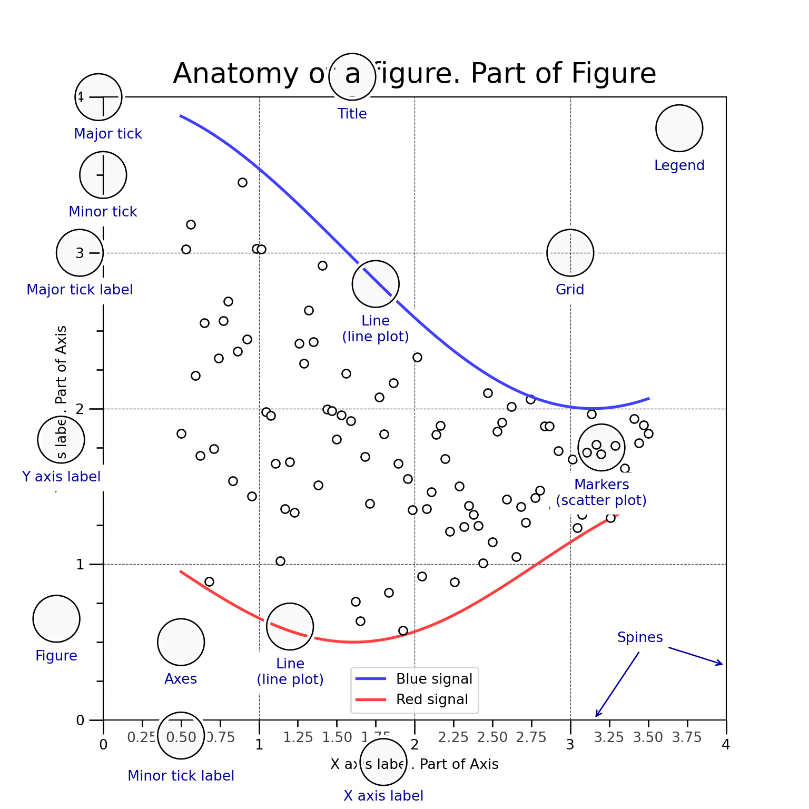
It is important to note that there are several areas to that differ from ggplot. The logic differs in a lot of ways so there is no clean 1:1 translation of matplotlib and ggplot. So it worth adjudicating some of these differences
Figure: In way this is just bringing the plot into existince. Kind of like when you just do
ggplot. This also includes the titles, fontface of the titlesAxes: This corresponds to the area where the data will be rendered. Sometimes refered to as the subplot. This controls the spines basically the area that is around the plot. This also includes the ticks and the actual plotting of the data.
Axis: For some reason this is separated but these are really just the equivelent of the scales argument in ggplot
Plotting
To initialize a plot we can just do
fig,ax = plt.subplots(figsize=(10,6))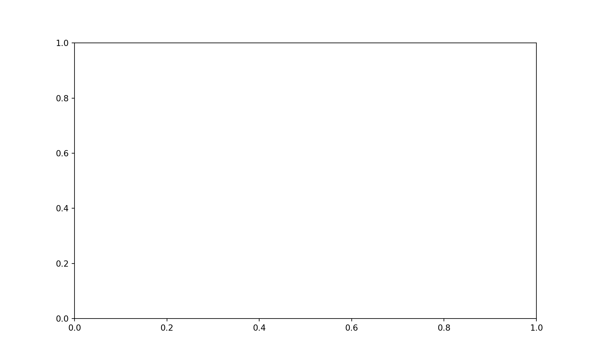
fig is just a matplotlib object. We don’t neccessarily ‘add’ anything in the same way we do with ggplot. This kind of boils down to differences in R and Python. While ggplot is its own class in R and geoms have to be registered as class methods. Spirtually these all follow the functional programming paradigm. While matplotlib follows a more object oriented paradigm.
So instead of adding layers like below
library(ggplot2)
pengs = palmerpenguins::penguins
ggplot(pengs, aes(x = body_mass_g)) +
geom_histogram()
We are modifying each of the underlying objects using class methods.
fig, ax = plt.subplots(figsize=(10, 6))
ax.hist(pengs["body_mass_g"], bins=30)Notice that one of the key differences in the two plots is that when making the plot we are operating on the axis class which has the plotting ‘geometries’. Whereas in ggplot geom_histogram is a function that will create the bins, plot the data, then go and grab the labels, and then place them on the appropraite axis. So in matplot lib we would need to do somthing to this effect.
fig, ax = plt.subplots(figsize=(10, 6))
ax.hist(pengs["body_mass_g"], bins=30)
ax.set_xlabel("body_mass_g")
ax.set_ylabel("count")
fig.suptitle("Distribution of Body Mass")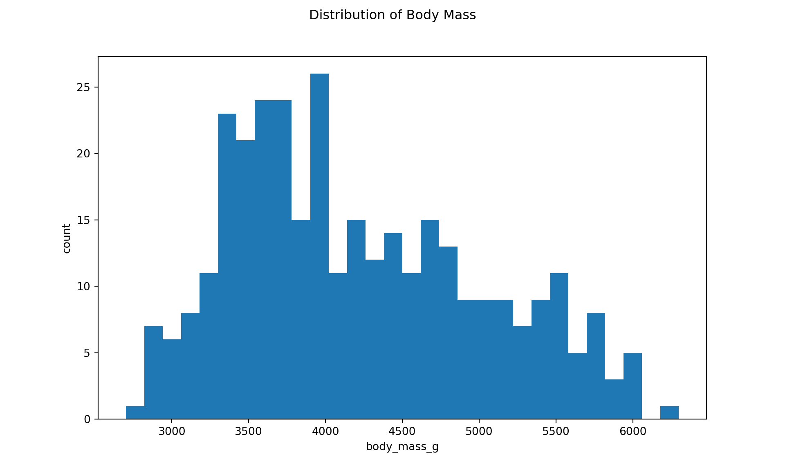
One thing that comes up frequently if you are doing things itertively is that if we wanted to modidfy a plot matplot has the tendency of overlaying things on top of plots that you have previously created. We actually have to close out the plot since we interact with each of the indivual object itertively especially when working in a script.
We can clear/close a plot doing one of two things
fig, ax = plt.subplots(figsize=(10, 6))
ax.hist(pengs["body_mass_g"], bins=30)
ax.set_xlabel("body_mass_g")
ax.set_ylabel("count")
fig.suptitle("Distribution of Body Mass")
fig.clf()fig, ax = plt.subplots(figsize=(10, 6))
ax.hist(pengs["body_mass_g"], bins=30)
ax.set_xlabel("body_mass_g")
ax.set_ylabel("count")
fig.suptitle("Distribution of Body Mass")
plt.close(fig)Other elements of aes
Lets take a very simple ggplot.
ggplot(pengs, aes(x = flipper_length_mm, y = body_mass_g, color = species)) +
geom_point()
aes is kind of just a function. So when aes is not empty it will look through the unique values of the column and then loop over the values and plot them. Whereas in matplotlib we have to explicitly do this. Seaborn is a bit of a higher level api. Which will abstract some of this work away for you. In matplotlib we have to do this ourselves
Code
fig, ax = plt.subplots(figsize=(10, 6))
colors = ["blue", "red", "green"]
species = pengs.unique(subset="species")["species"]
for color, species in zip(colors, species):
spec_data = pengs.filter(pl.col("species") == species)
ax.scatter(
x=spec_data["flipper_length_mm"],
y=spec_data["body_mass_g"],
c=color,
label=species,
)
ax.set_xlabel("Flipper length mm")
ax.set_ylabel("Body Mass g")
ax.legend(loc="center left", bbox_to_anchor=(1, 0.5))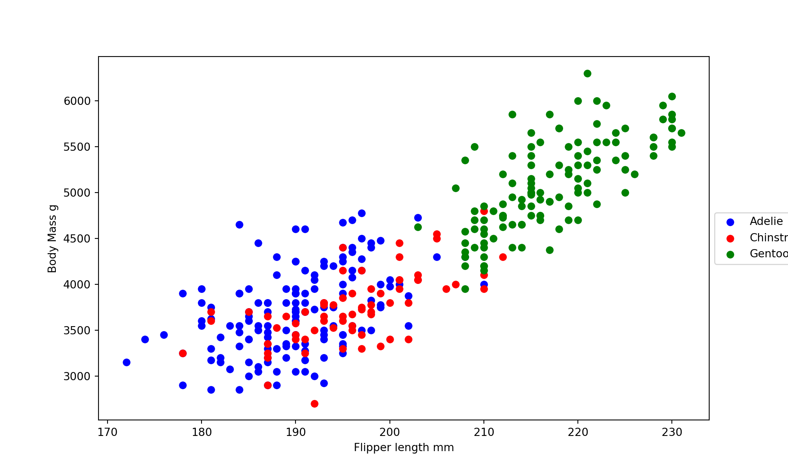
This would for any number of plot types
fig, ax = plt.subplots(figsize=(10, 6))
colors = ["blue", "red", "green"]
species = pengs.unique(subset="species")["species"]
for color, species in zip(colors, species):
spec_data = pengs.filter(pl.col("species") == species)
ax.hist(
x=spec_data["flipper_length_mm"],
color=color,
label=species,
alpha=0.5,
edgecolor="white",
)
ax.legend()
ax.set_xlabel("Flipper Length mm") 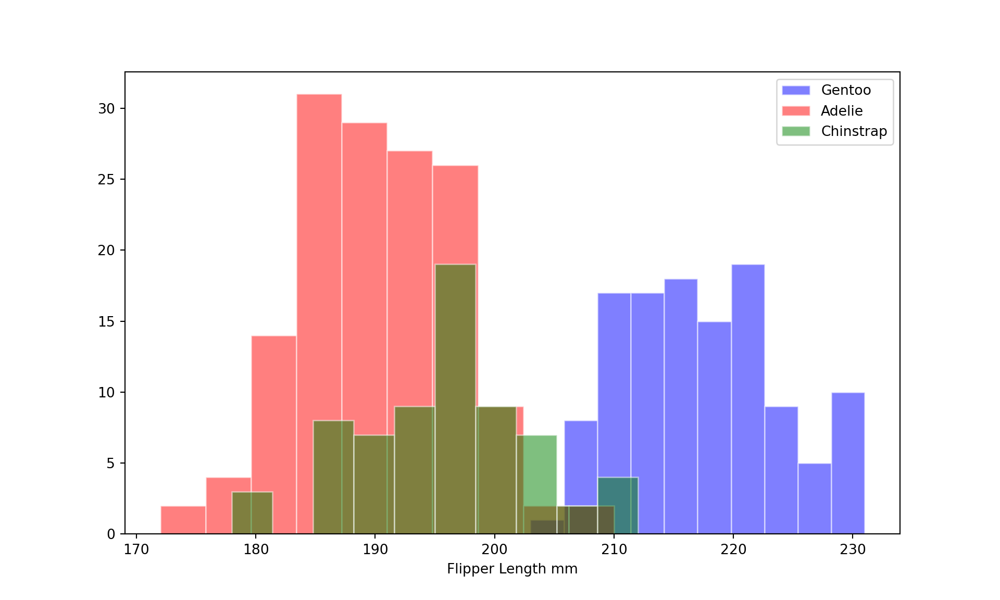
More ‘complex plots’
Matplot has a lot of nice things when we start to need more bespoke transformations to the plot areas. One of the things that it lacks when compared to seaborne or ggplot. So lets take a simple plot that we tend to make a lot in demos or just as a data exploration
ggplot(pengs, aes(x = flipper_length_mm, y = body_mass_g, color = species)) +
geom_point() +
geom_smooth()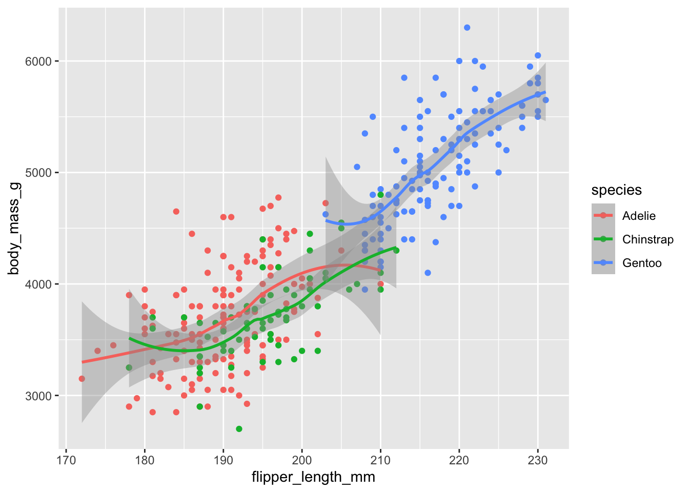
The points we have already covered how to make but there are no built in class methods to matplot lib for a lowess smoother. Which kind of feels like a silly choice. To do this we first need to define a function. We then have to do the same thing
Code
from statsmodels.nonparametric.smoothers_lowess import lowess
def bootstrap_lowess(x, y, frac=0.75, it=3, n_boot=100, alpha=0.05):
"""
Bootstraps LOWESS smoothing to estimate confidence intervals.
Parameters:
- x, y: Input data (must be numpy arrays)
- frac: Smoothing span (same as ggplot default)
- it: Number of robustifying iterations
- n_boot: Number of bootstrap resamples
- alpha: Confidence level (default 95%)
Returns:
- x_sorted: Sorted x values
- ysm: Smoothed LOWESS estimate
- y_lower, y_upper: Confidence interval bounds
"""
# Sort x and y to avoid issues
sorted_indices = np.argsort(x)
x_sorted, y_sorted = x[sorted_indices], y[sorted_indices]
# Compute the original LOWESS estimate
smoothed = lowess(y_sorted, x_sorted, frac=frac, it=it)
ysm = smoothed[:, 1] # Extract smoothed values
# Bootstrap resampling
y_boot = np.zeros((n_boot, len(x_sorted)))
for i in range(n_boot):
resample_idx = np.random.choice(
len(x_sorted), len(x_sorted), replace=True)
y_resampled = y_sorted[resample_idx]
x_resampled = x_sorted[resample_idx]
smoothed_boot = lowess(y_resampled, x_resampled, frac=frac, it=it)
y_boot[i, :] = np.interp(
x_sorted, smoothed_boot[:, 0], smoothed_boot[:, 1])
# Compute confidence intervals
lower_bound = np.percentile(y_boot, 100 * (alpha / 2), axis=0)
upper_bound = np.percentile(y_boot, 100 * (1 - alpha / 2), axis=0)
return x_sorted, ysm, lower_bound, upper_boundfig, ax = plt.subplots(figsize=(10, 6))
colors = ["blue", "red", "green"]
species = pengs.unique(subset="species")["species"]
for color, species in zip(colors, species):
spec_data = pengs.filter(pl.col("species") == species)
x = spec_data["flipper_length_mm"].to_numpy()
y = spec_data["body_mass_g"].to_numpy()
# Sort data to avoid issues in plot and LOWESS
sorted_indices = np.argsort(x)
x_sorted, y_sorted = x[sorted_indices], y[sorted_indices]
x_sorted, ysm, y_lower, y_upper = bootstrap_lowess(
x, y, frac=0.75, it=3, n_boot=100
)
# Scatter plot
ax.scatter(x, y, c=color, label=species, alpha=0.6)
# Smoothed LOWESS line
ax.plot(x_sorted, ysm, color=color, linewidth=2)
# Confidence interval shading
ax.fill_between(x_sorted, y_lower, y_upper, color=color, alpha=0.2)
ax.set_xlabel("Flipper length mm")
ax.set_ylabel("Body Mass g")
ax.legend(loc="center left", bbox_to_anchor=(1, 0.5))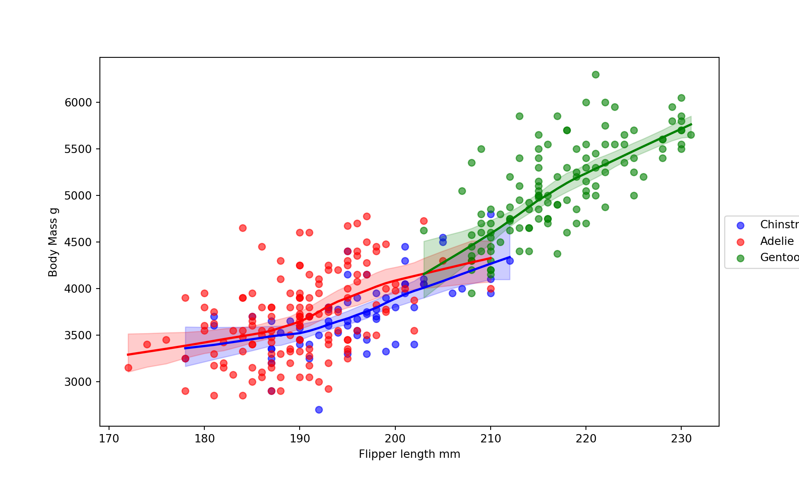
Similarly we would need to define a kernel density estimator however it is going to be a whole lot easier to let seaborn take the wheel in some cases
import seaborn as sns
fig,ax = plt.subplots()
sns.kdeplot(pengs, x = 'flipper_length_mm', fill = 'species', hue = 'species')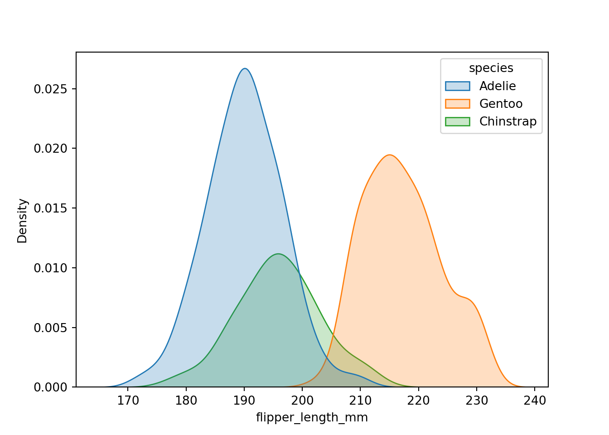
In the same way ols and lowess plots get a bit easier and you can maintain some of the flexibility
fig, ax = plt.subplots(figsize = (10,6))
colors = ["blue", "red", "green"]
species = pengs.unique(subset="species")["species"]
for color, species in zip(colors, species):
spec_data = pengs.filter(pl.col("species") == species)
sns.regplot(spec_data, x = 'flipper_length_mm', y = 'body_mass_g', lowess = True, scatter = True,
ax = ax, color = color, label = species)
ax.set_xlabel('Flipper Length(mm)')
ax.set_ylabel('Body Mass(g)')
ax.legend()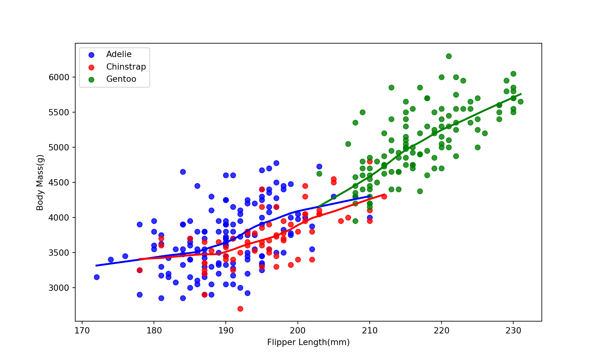
Similarly you could do the same thing for the kernel density estimator if you are truly wedded to the matplot lib default style then you could just loop over like this
fig, ax = plt.subplots(figsize = (10,6))
colors = ["blue", "red", "green"]
species = pengs.unique(subset="species")["species"]
for color, species in zip(colors, species):
spec_data = pengs.filter(pl.col("species") == species)
sns.kdeplot(spec_data, x = 'flipper_length_mm',
ax = ax, fill = True, color = color, label = species)
ax.set_xlabel('Flipper Length(mm)')
ax.legend()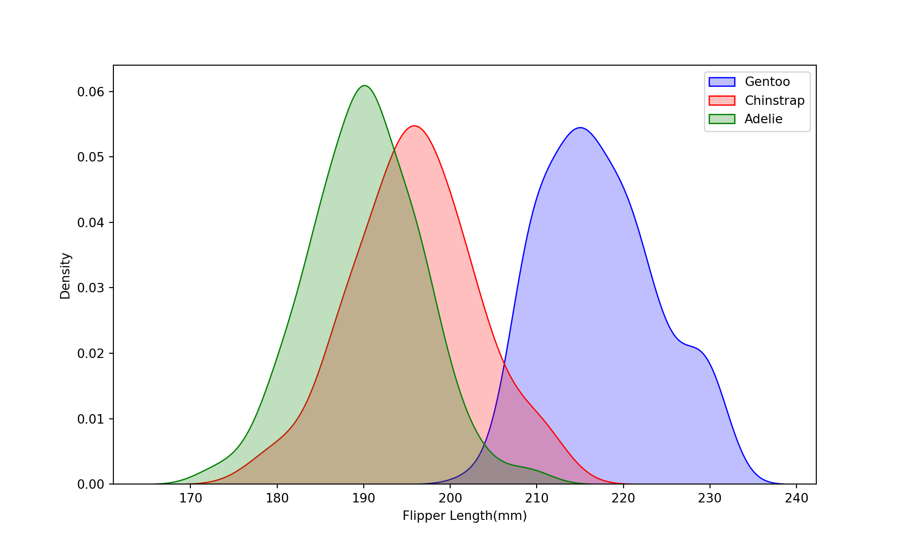
Small Multiples
Sometimes we need small multiples to show make things look nice or not make our plots to busy. In ggplot this is fairly trivial because we don’t neccessarily need super fine tuned control over the layout. Sometimes we just need two multiples like this.
pengs = na.omit(pengs)
ggplot(pengs, aes(x = body_mass_g, fill = species)) +
geom_histogram() +
facet_wrap(vars(sex))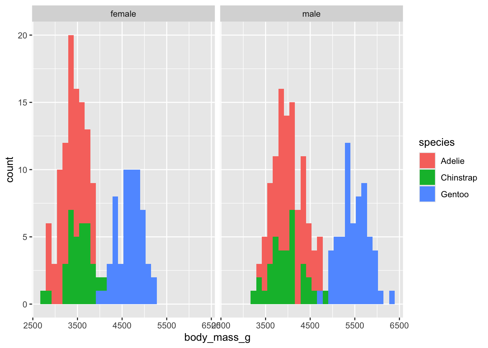
In matplotlib this is where our figure object comes in handy. We are effectively going to tell the figures that we need another plot in the same way that we use par in base R plots. One of the things that really makes matplotlib standout from ggplot is just how finetuned you can make the plots.
pengs = pengs.filter(pl.col('sex').is_not_null())
sexs = pengs.unique(subset = 'sex')['sex']
fig, axes = plt.subplots(nrows=1, ncols=len(sexs), figsize=(10,5))
colors = ["blue", "red", "green"]
species = pengs.unique(subset="species")["species"]
for i, sex in enumerate(sexs):
ax = axes[i]
ax.set_title(f"Sex: {sex}")
for color, species_name in zip(colors, species):
# Filter data for the current species and sex
spec_data = pengs.filter((pl.col('species') == species_name) & (pl.col('sex') == sex))
ax.hist(spec_data['body_mass_g'], bins=30, color=color,
edgecolor='white', alpha=0.7, label=species_name)
ax.set_xlabel('Body Mass (g)')
ax.legend()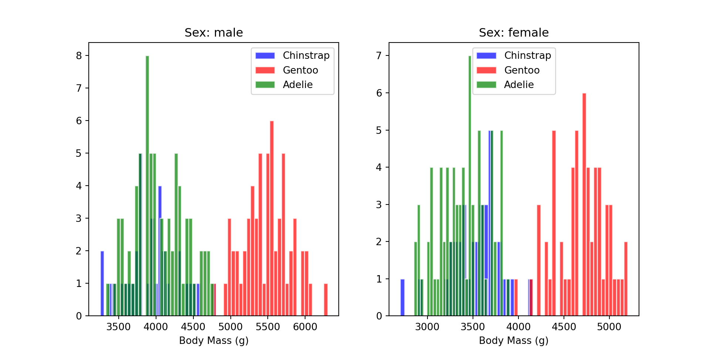
Similarly we can do the same thing with our loess plots
pengs = pengs.filter(pl.col('sex').is_not_null())
sexs = pengs.unique(subset = 'sex')['sex']
fig, axes = plt.subplots(nrows=1, ncols=len(sexs), figsize=(10,5))
colors = ["blue", "red", "green"]
species = pengs.unique(subset="species")["species"]
for i, sex in enumerate(sexs):
ax = axes[i]
ax.set_title(f"Sex: {sex}")
for color, species_name in zip(colors, species):
# Filter data for the current species and sex
spec_data = pengs.filter((pl.col('species') == species_name) & (pl.col('sex') == sex))
sns.regplot(spec_data, x = 'flipper_length_mm', y = 'body_mass_g', lowess = True, scatter = True,
ax = ax, color = color, label = species_name)
ax.set_xlabel('Body Mass (g)')
ax.legend()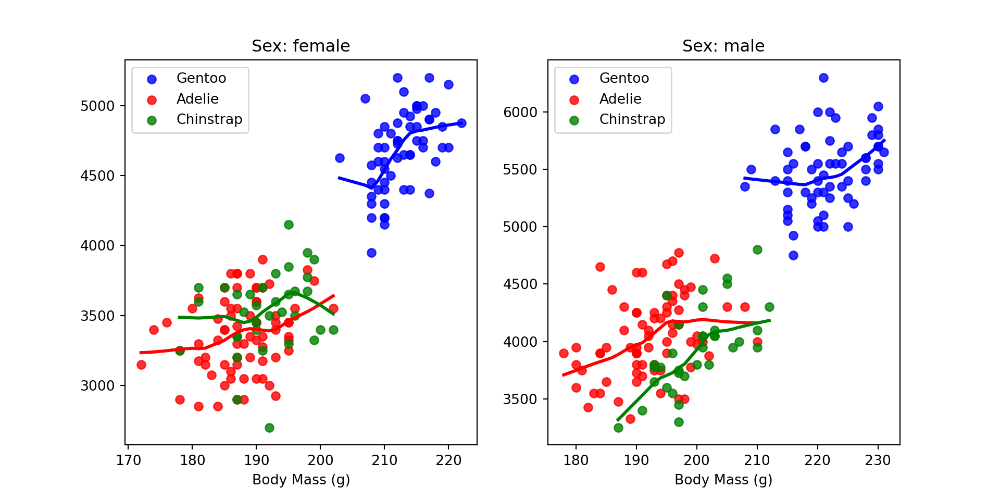
Customizing Appearences
I think generally nobody that does data visualization like the defaults. So adding themes or customizing themes are important. Lets just work with a very simple plot and just keep making it nice.
fig, ax = plt.subplots(figsize=(10, 6))
colors = ["blue", "red", "green"]
species = pengs.unique(subset="species")["species"]
for color, species in zip(colors, species):
spec_data = pengs.filter(pl.col("species") == species)
ax.scatter(
x=spec_data["flipper_length_mm"],
y = spec_data['body_mass_g'],
color=color,
label=species,
alpha=0.5
)
ax.legend()
ax.set_xlabel("Flipper Length mm") 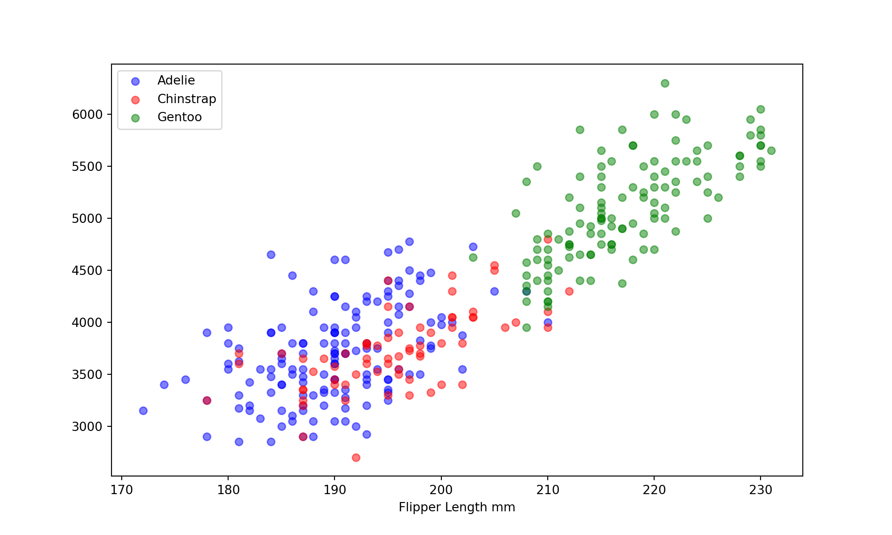
I have a little bit of a bespoke ggplot theme which is really just aligning the axis labels and customizing the fontface to be Assitant.
plt.rcParams.update({
'font.family': 'Assistant'
})
fig, ax = plt.subplots(figsize=(10, 6))
colors = ["blue", "red", "green"]
species = pengs.unique(subset="species")["species"]
for color, species in zip(colors, species):
spec_data = pengs.filter(pl.col("species") == species)
ax.scatter(
x=spec_data["flipper_length_mm"],
y = spec_data['body_mass_g'],
color=color,
label=species,
alpha=0.5
)
ax.legend(frameon = False, loc = 'center left', bbox_to_anchor=(1, 0.5))
ax.set_xlabel("Flipper Length mm", loc = 'left', labelpad = 15)
ax.set_ylabel('Body Mass(g)', labelpad = 15, loc = 'top')
ax.spines['top'].set_visible(False)
ax.spines['left'].set_visible(False)
ax.spines['bottom'].set_visible(False)
ax.spines['right'].set_visible(False)
ax.tick_params(axis = 'x', which = 'both', length = 0)
ax.tick_params(axis = 'y', which = 'both', length = 0)
ax.grid(True, linestyle = 'solid', which = 'major', linewidth = 0.4)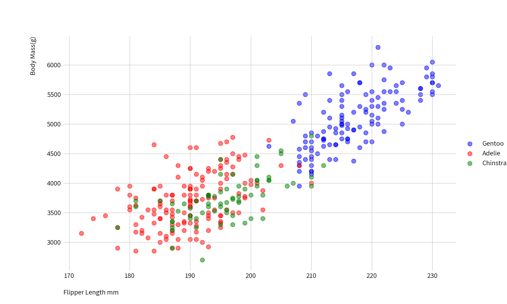